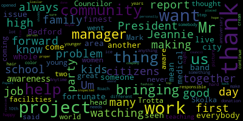
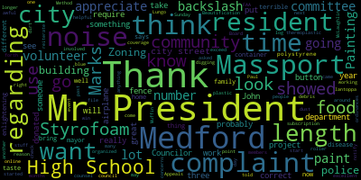

[Falco]: The eighth regular meeting in the Medford City Council will now come to order. Clerk Hurtubise, please call the roll.
[Adam Hurtubise]: Presence. All seven members are present. At this time, I would ask everyone to please rise to salute the flag.
[SPEAKER_06]: I pledge allegiance to the flag of the United States of America, and to the republic for which it stands, one nation, under God, indivisible, with liberty and justice for all.
[Falco]: On the motion of Consul Knight to suspend the rules, seconded by Consul of Beers. All those in favor? All those opposed? The rules are suspended. Consul of Knight.
[Knight]: Mr. President, thank you very much and thank you to my council colleagues for entertaining the motion. The reason that I asked to suspend the rules this evening is because we have the Mattarese family here who would like to make a public service announcement relative to Rare Disease Day taking place this Saturday. So at this point in time, Mr. President, I'd like to ask the Mattareses to come on up and provide us with a little information about Rare Disease Day and this public service announcement.
[SPEAKER_10]: Thank you, Councilor. If you could please give us your name. I am Megan Mattarese. February 29th is Rare Disease Awareness Day. There are over 7,000 rare diseases and my sister Emily has one of them. She has galactosemia. Galactosemia is just a big word that means your body can't process any milk products. When you drink milk, it gets broken down into sugars and one of them is galactose. The only way you can get galactosemia is if both your parents have the gene. When someone is born with galactosemia, that means both their parents have given them their non-active gene, making it active. My mom and dad have a one in four chance every time they have a kid, having a kid with galactosemia. My sister was born, when my sister was born, she got jaundice, which means her skin looked yellow. and couldn't give her the formula down because the milk in it was making her sick. She had to go back to the hospital for about a week. They did a test called PKU. This is a blood test they do on all newborn babies, and they did it again on my sister to confirm she had galactosemia. My sister had to follow a no-milk diet. If she doesn't follow her diet, the milk sugar will build up in her body and can make her kidneys and liver shut down. She can also get cataracts, which is something that affects your eyes. Everyone born with glaucoma besides the diet has different complications. Some don't have any, my sister has a lot. She has speech apraxia, which means her mind knows what she wants to say, but doesn't know how to tell her mouth how to say it. She has hand tremors, which means her hands will shake, intellectual disabilities, which means even though her body says she's 16, her mind tells her that she's younger. She also has some medical problems that she goes to the children's hospital for. The year my sister was born, the chances of being born with glaucoma were one out of 60,000. She was the only one born in Massachusetts that year. Inside of these envelopes is a ribbon. I ask you to wear them this Friday and Saturday for people with rare diseases and Emily. Thank you.
[Falco]: Thank you. Councilor Bears.
[Bears]: I just wanted to say thank you again and I'll be wearing the ribbon. So thank you for speaking. And I'd also like to make a motion to suspend the rules to take paper 20 There's a number of there are a number of people that number of people to speak.
[Falco]: All right, then I'll wish Thank You council appears at this point. I'll call on councillor Scarpelli Thank you
[Scarpelli]: Our speaker this evening, I want to thank you because it's the first time I've heard of this rare disease. And your sister is very lucky to have a sister like you to make sure people are educated and learning what she has to deal with every day. So, congratulations and thank you for enlightening all of us. So, and I will also be wearing the ribbon. So, thank you.
[Falco]: Thank you, Councilor Scarpelli. Councilor Knight.
[Knight]: Mr. President, thank you very much. I'd just like to take a moment to ask Mrs. Mattarese to come up here and explain to us a little bit about what's going on this weekend and the work that she's been able to put in to raise awareness for this rare disease on Rare Disease Day. There's some pretty cool stuff going on. She's gotten a lot of support from residents here in the community, my colleagues on the school committee, the chief of police, the Boston Celtics, and she's really put a lot of work into it. We just sat down and spoke a little bit before the meeting, and I'd just like her to tell everybody about what she's been doing over the past several weeks to get everybody prepared for this, because it's pretty amazing what you've been able to accomplish in such a short time.
[SPEAKER_11]: Yeah, it was just an idea that I had. And I have to really credit to the mayor, because she was the first person that said yes. I emailed her and I asked her if she would consider lighting up City Hall for rare disease awareness, and she said sure. And then I said, well, what else could I do? It kind of went off on that, so now I have the Zacon Bridge being lit up blue on the 29th. The Boston South is going to light up the TD Garden. I'm waiting to hear back from the Prudential. And there are being over 2,000 ribbons worn from people up at Medford High School to you guys, to the school community, to the chief of police, the fire department and then again I put it out there on Facebook and I was unbelievable from back from that. So there's just a lot and I really thank you all for giving us this chance to share about galactosemia. Thank you.
[Falco]: Thank you for all the hard work you're putting in to do this. Councilor Caraviello.
[Caraviello]: Thank you, Mr. President. Again, I want to thank you for bringing an awareness to everybody about this. The city of Bedford, when someone has a problem or an issue, we all band together. I mean, you've seen many, many kids that have had problems and things that This whole community has come together to help them out. And this is another thing, we're fortunate to live in an area that have some of the finest medical facilities in the world to help you with these things. So again, I thank you for bringing this forward and making us all aware of it.
[Falco]: Thank you, Councilor Caraviello. Councilor Morell.
[Morell]: Thank you, Mr. President. I want to echo my fellow Councilors and thank the Madaris family for coming out tonight and for doing all those extra steps to make sure our awareness is really raised. It's a proud moment to have someone from our own community doing work that's going to reach so many people and raise awareness for so many people. As I understand, there's 300 million people around the world. who are affected by rare diseases. So I appreciate the work you're doing in Medford and around greater Boston to raise awareness. And I thank you for taking the time to come here and also share the ribbons that I know I'll wear with pride. So thank you.
[Falco]: Thank you, Councilor Morell. Councilor Marks.
[Marks]: Thank you, Mr. President. I want to thank the Matariz family as well. And if we can also recommend that the mayor use the city billboard, which we're allowed to use on 93 to promote this also, this terrible disease or these terrible diseases, Mr. President. Thank you, Councilor Marks. Thank you.
[Falco]: I'd like to thank all my colleagues and thank you for raising awareness to this cause and thank you for all your hard work. It's great to see you putting all this effort into this and to bring awareness to everything. So on the motion of Council Marks, seconded by Councilor Caraviello. All those in favor? All those opposed? The motion passes. Thank you. Councilor Bears. Motion to suspend the rules to take paper 20078 out of order while we're under suspension paper two zero zero seven eight petitions presentations and similar papers petition by ellie hunt 41 at washington street medford massachusetts 0 to 1 5 5 and juliet frank's 48th summer street but for massachusetts 0 to 1 5 5 to present a petition created by medford high school students requesting that the city council ban the use of polystyrene in the city of medford due to their impact on the environment If you please have your name and address for the record
[Ellie Hunt]: I'm Juliette Franks. I live at 48 Summer Street, and I'm Ellie hunt. I live at 41 Watson Street We have compiled a presentation that we're going to display on the project. Oh great.
[Falco]: Okay. Let's dim the lights
[Ellie Hunt]: Try this. So as we said, I'm Ellie Hunt, and this is Juliette Franks. And we are Medford High School students. And we are part of the CCSR, which is the Center for Citizenship and Social Responsibility. And that is a club that has allowed us to come up with these ideas on how to better our community and bring them forward to make a difference. So we are trying to ban polystyrene, which is commonly known as styrofoam.
[SPEAKER_09]: So a little bit about the petition. I started it in October of this year. That's when I put the petition up and it went live, but a lot of work did go in before that. It is pushing for a citywide ban of foam polystyrene and The last we checked the petition there was about 1,016 supporters. We're concerned about the destruction of the environment and then to raise awareness about the health impacts.
[Ellie Hunt]: So a list of the supporters as of Friday was sent by email for review. So what is styrofoam? Styrofoam is the name we commonly associate with polystyrene foam. Polystyrene is a chemical and way of, it's a material, but it's incredibly harmful for the environment due to how it is created and how it is used and where it ends up. So this foam can be up to 95% air, making it incredibly light, yet it is extremely expensive and hard to recycle.
[SPEAKER_09]: It's also difficult to recycle, especially when it's used for food service, because if you've ever broken apart styrofoam, you'll notice that it's made of a bunch of very small beads. So when food gets caught in those, it's very difficult for it to wash out, and thus can be considered contaminated when brought to recycling plants. So during production, it will release ozone-depleting chlorofluorocarbons into the air, and it requires petroleum, which is a non-renewable fossil fuel, to produce. So even when it is being produced, it is already polluting the air before even making human contact. So this is contributing to climate change by putting out greenhouse gases.
[Ellie Hunt]: So where does the styrofoam end up? The styrofoam has been known to end up in landfills, beaches, oceans, animal stomachs, and food chains. So polystyrene, through this survey, was found to be the fifth, sixth, and seventh largest type of litter from land-based sources found on the U.S. coast, which means that the fifth, sixth, and seventh most common thing to wash up on the U.S. coast was made out of this polystyrene material, which is crazy that that much of it can be left in our oceans and just washes up on the beach, littering the lands, littering the oceans, and providing harmful things to animals because these animals mistake these little beads and these little pieces of plastic and the styrofoam as food and they start eating it because they can't tell the difference between fish and foam.
[SPEAKER_09]: Yeah, so you'll see in this picture that birds will often use it to nest And it will offer no protection. So, you know, these birds are not only eating litter, but they're using the styrofoam to nest because they don't know. They think it's part of the environment. And so it's causing them absolutely no protection and it's killing off animals. And so when animals do ingest the styrofoam, it'll block their digestive tracts, meaning anything they eat after ingesting the styrofoam won't digest and they will end up dying of starvation.
[Ellie Hunt]: So polystyrene does not biodegrade. Paper, cardboard, any of these plant-based materials, if you leave them outside long enough in the nature, they will break down and become part of the ecosystem. But polystyrene will never biodegrade no matter how long you leave it out there. And that's because of what it is made of and how it is made. So it can take more than 200 years for polystyrene to break down into the little beads, let alone stay in the containers. And yet again, it is too expensive to realistically recycle.
[SPEAKER_09]: So there are also a lot of health risks that come with using styrofoam. The World Health Organization has classified it as a possible carcinogen. And when food is too hot and is put on styrofoam, it can break down the styrofoam and cause the synthetic chemicals it is made out of to leach into food, which will effectively poison any of your food and hot drinks. So for example, if you get a coffee from Dunkin' Donuts, they will put their drinks into styrofoam cups And if those drinks are too hot, there is the possibility of it breaking down the styrofoam.
[Ellie Hunt]: So we are here to propose a polystyrene ban. In Massachusetts, 46 municipalities have already banned some forms of polystyrene. Some of these include Cambridge, Melrose, Somerville, and Winthrop. So many of these communities have banned the retail sale of styrofoam and the food production and they've banned the ability for food to be served on styrofoam.
[SPEAKER_09]: So some of the countries that have banned it are up there on the bottom bullet. Jamaica, Belize, the Bahamas, Barbados, Costa Rica, Granada, and Trinidad and Tobago have all banned the use of styrofoam. So the solution would be to ban serving prepared food in and on polystyrene. So this would include all businesses and schools in Medford. The proposed use of trays in Medford would hopefully be the reusable acrylic ones.
[Ellie Hunt]: There are other options if that is not. Possible. So this will impact our community. It will make Medford overall a greener and more sustainable place to live in. And by making this change, we are paving the way for future generations to live in a healthier, better climate. And Dunkin' Donuts, it is not impossible to achieve. Dunkin' Donuts has already said that it has already become polystyrene free. And if Dunkin' Donuts can do it, so can we.
[SPEAKER_09]: We genuinely believe that it's our responsibility as a city to, you know, do things to step away from climate change, especially because in the recent years it has become such a big issue. And, you know, with things like the Green New Deal being talked about, I think that we should, as a city, take steps forward to clean up the earth.
[Ellie Hunt]: So this project and presentation wouldn't have been possible without multiple people, including the CCSR and the funders for the CCSR, Katie Stefani, who helped make this presentation, Michael Skorka, who has been a head advisor, along with Rhetta Smith and Alicia Hunt, who have consulted with us, Andrew Milne, who created inspiration and for this project.
[SPEAKER_09]: Andrew Milne was my APUSH teacher last year, who really pushed me to pursue this.
[Ellie Hunt]: view the council members for considering this and the community that has come out to support us. So we have our sources.
[Falco]: Great job, nice presentation. There are a number of Councilors that have questions or want to make comments on this, so I'll recognize them right now. The first one, Councilor Bears.
[Bears]: Thank you so much. I just want to thank both of you. Is Katie a student as well?
[Falco]: Yes.
[Bears]: Yeah, great. Thank you, Katie. CCSR.
[Unidentified]: Yeah, good job, Katie.
[Bears]: Mr. Skorka, who is my homeroom teacher. Retta, of course, and Mr. Milton. No offense, Mr. Skorka was my favorite teacher from high school. And really, he's one of the reasons I'm here right now. So I just want to thank you all off the top and everyone else who helped. Councilor Morell and I worked on a proposed ordinance, which there's language for with the councilors right now. Addressing a lot of the stuff that's in your presentation. It is based on our city's plastic bag ordinance but obviously. Addressing a different topic, but it's based on that structure. So it's something that we've done recently around environmental protection. Provides the same protections around for businesses, you know, if they have an undue hardship, that kind of thing. And so it addresses the city as well and businesses in terms of going into effect. It would go into effect in 2021, which gives we think enough time for the city. And especially the school committee is currently working on a report that would address the costs for the schools and how much that would, what the effects would be there. And it really gives time for everyone to adjust and get to a good place. So I just wanted you to know that we took it very seriously, drafted an ordinance, and after everyone speaks, we'd like to move it to a committee of the whole so we can have the conversation to get this on the books. So thank you so much, and to everyone who came out tonight as well, and everyone who worked on this.
[Falco]: Thank you, Councilor Bears.
[Scarpelli]: Councilor Scarpelli. Thank you, Mr. President. First of all, It takes efforts from young ladies like yourself to come out and have the courage to see something and follow through with it. And you could see greatness upon the both of you as you move forward. Because it's tough to even just stand up there right now and to come out and present such an important topic. And I think that's what, you know, Mr. Trotto, Mr. Skorka do with CCSR. I know that it's something my son loves doing. It's one of the reasons why a lot of kids are staying in Medford High, because they're seeing something that they can actually touch, they can go after and we give them that opportunity to do great things in our community. And I applaud our school system. It's what makes Medford as great as it is. It's programs like this, it's leaders like Mr. Skorka, Mr. Trotto, it's students like yourselves. And I applaud my colleagues that have already done the legwork to to get the resolution started and move the ordinance forward, and it's something I'll support a thousand percent. So, great job and congratulations.
[Falco]: Thank you so much. Thank you, Councilor Scarpelli. Councilor Morell.
[Morell]: Thank you, Mr. President. I want to thank you both so much for coming out tonight and putting all the work into this. My life outside this council is I work in sustainability. And I had a bunch of points I was going to make, but you guys hit them all in the presentation. So I thank you for doing that. In the world of sustainability, it's easy to get overwhelmed by the sheer magnitude of the task at hand. And I think that's why it's so important what you did, things where we can make change, places where we can start. And then hopefully we can go farther from here even as well. And I'm glad that there is the school, the research going on to see what we can do for a feasible replacement. There's a lot of things to think of when it comes in. To that and I'm so glad that's already moving forward and as you pointed out there We are surrounded by areas that already have bands like this in place. So I think for local businesses and stuff like that that would be affected by that the ordinance of course builds in time to find alternatives and then there are these communities around us where businesses are making this work and they can reach out so I thank you so much for taking the initiative to collect those signatures, bring this before the council, and just do such a thorough presentation. And I'm so happy to support this. So thank you.
[Falco]: Thank you so much.
[Morell]: Thank you, Councilor Morell.
[Falco]: Councilor Marks.
[Marks]: Thank you, Mr. President, and thank you for the presentation. It was very enlightening. I never realized when I would go out for takeout food and get something in a Styrofoam container, I'd bring it home, and it would taste different. And now I know why it tastes different, because the food's probably heating up that Styrofoam, and it's letting off chemicals into my food. That's very enlightening. The other thing I found very interesting, it says that polystyrene showed me an expanded styrofoam, which is a thermoplastic. And we use thermoplastic on our crosswalks because it's a very durable substance and it's highly reflective and it's slip resistant. But it's amazing that this also transforms into a styrofoam container that you put your food in. And I can see the health effects and a reason why we should probably take a look at this. I remember my days at the high school. We didn't even know who was on the city council. Now we have members of the high school that are putting forward ordinances and creating ordinances in our community. Times have changed. And we really appreciate it from the plastic bag to the polystyrene, which I think is another logical step. And I appreciate all the effort that you put into this.
[Unidentified]: Thank you so much.
[Marks]: Thank you. Thank you, Councilor Marks.
[Falco]: Councilor Caraviello.
[Caraviello]: Thank you, Mr. President. Councilor Mark said it at the head, on the days when we went to high school, we would never thought of ever coming up here and doing what you two young women did. And I thank you. And I also want to thank Mr. Skolka and Mr. Trotta for their great work in teaching the high school kids what it is to be responsible citizens. I thank you for your hard work.
[Falco]: Thank you, Councilor Caraviello. And if I may conclude by thanking you for all your hard work and your effort. This takes a lot of time and effort and energy to put this together, to have everybody signing that petition, which is pretty impressive, the amount of people that signed it. you know, polystyrene is very bad, I mean, for our environment, and for all the reasons that you outlined in your presentation, which was great. And this is something that I would support 100%. So I thank you for bringing it forward, and thank all the councilors for their questions, and at this point, I'll recognize Councilor Bears, and thank you for everything, appreciate it.
[Bears]: Thank you, Mr. President, and just thank you again. So I would like to move that we take the text of this draft ordinance and have a committee of the whole meeting.
[Falco]: Okay, on the motion of Councilor Bears to move this to Committee of the Whole, seconded by Councilor Morell. All those in favor?
[Knight]: Aye. Excuse me? I'd like to amend the paper just to request that the City Solicitor be available at this meeting.
[Falco]: Okay, on the motion of Councilor Bears, seconded by Councilor Morell, as amended by Councilor Knight, that the City Solicitor be in attendance at the Committee of the Whole meeting when it's scheduled. All those in favor? Aye. All those opposed? Motion passes, thank you. Council night council night made the motion to revert to the regular order of business which was seconded oh Yes, okay while we're under suspension Councilor Marks has a public announcement oh two public announcements. Councilor Marks.
[Marks]: Thank you Mr. President. I was contacted recently through email by a Medford resident who was concerned about airplane noise over the city of Medford like many other residents and he asked that I use this council forum to reiterate the fact that last year Medford filed over 700 complaints to Massport regarding airplane noise. And based on the number of complaints, it's our belief through our representatives, Peter Hauk and Luke Presner, that the more complaints we file with Massport for Medford citizens regarding the noise, that Massport and the FAA may take a longer look at our concerns. So he asked me if I could just reiterate the contact numbers at Massport. And I told him I'd do so. If someone wants to make a complaint to Massport regarding airplane noise by phone, it's 617-561-3333. And if you want to do it online, it's www.massport.com backslash loganairport backslash aboutlogan backslash noise. And if you want to do it online by Air Noise mobile friendly web, it's an application or a button subscription, it's HTPS double backslash airnoise.io. And those are the three ways residents can file a complaint, Mr. President. There is that button subscription that I'm not familiar with, but I know Medford residents carried around with them, and when they hear excessive noise, they press a button and it logs in a complaint automatically. And I forget what the app costs it may be ten or fifteen dollars for the year But it's very helpful and the more complaints. We log mr. President the more our concerns will be heard by Massport and FAA I appreciate you taking the time off for that. Thank you counsel marks the other thing I wanted to mention mr. President briefly and we just had our This past Sunday, a community volunteer initiative that started at Medford High School, the main entrance of Medford High School. There is a committee called Medford Beautification Committee, which organized an event this past Sunday from 8 to 4. to paint the front foyer of Medford High School, to spruce it up a little bit. The co-chairs are Larry White and Bill Carr Jr. They organized, must have been 75 people that showed up, Mr. President. A lot of local volunteers, a lot of businesses, which I'd like to name just a few, Mr. President. I think it's always helpful to let people feel that when they come out and help out, that they are involved and they are doing something good to get involved. Lou and John Iantoppa from Iantoppa Painting did tremendous work. John McLaughlin, who's the Director of Buildings and Grounds along with his staff did excellent work. Red's Painting, Magnificent Muffin donated coffee and muffins. Modern Hardware donated the Mustang blue paint, which from what I'm told is a specialized paint that is painted dark blue. Ryan Tate, project supervisor for select paints and finishes, donated all the materials and painting stuff for the entire event. I witnessed Mayor Lungo-Koehn painting herself, Mr. President, the stairway. It was very tedious work. Superintendent Dr. Maurice-Edouard Vinson was using a roller. She seemed to be a master with the roller. School committee members Kathy Kreatz, Melanie McLaughlin, Paul Rousseau, and Paulette Van der Kloot were also pretty handy with the paintbrushes. Hank Morris, Fred Roach, Neil Osborne here from City Hall, Ricky Harris, Rich Lavoie, Steven and John Pompeo, Chris Donovan, Sean Caron, Ed and Susan Lungo, and a number of volunteers, Mr. President. It was just a great day. It showed a lot of community pride. This is the first of many projects that this beautification committee is going to start working on, Mr. President. It's all volunteers, it's all donations, and it really was a win-win for the community of Method. And I want to thank everyone that showed up.
[Falco]: Thank you, Councilor Marks, and thank you for everyone that volunteered that day. On the motion of Councilor Knight, seconded by Councilor Bears, to revert to the regular order of business. All those in favor? All those opposed? The motion passes. Motions, orders, and resolutions 20-076, offered by Councilor Knight and Vice President Cariello, be it resolved that the Medford City Council hereby congratulate Ginny and Chucky Roach of West Medford Square's CB Scoops on its 10th anniversary, and be it further resolved that the Medford City Council hereby thank the Roach family for the countless charitable contributions to our community. Councilor Knight.
[Knight]: Mr. President, I defer to the senior member. In age and service. Thank you, Mr. President.
[Caraviello]: I want to thank the Roach family for their 10 years. I was there when they opened up and I was happy to be there when they had their 10th anniversary party that night. We had that picture from the first day we were there. Some of us were a lot younger and had different color hair, but it was good to be there. You know, Jeannie's the first to step up when somebody needs something. Anytime there's a party, Jeannie's always there to help. to make a donation with ice cream or help with anything. So here in the family, they're good community citizens and I want to thank them for all the work they do in the community and they'll continue to do in the community. So I want to thank them personally.
[Falco]: Thank you, Councilor Caraviello. Councilor Knight.
[Knight]: Mr. President, thank you very much, and I certainly echo Councilor Caraviello's sentiments. The Roach family are fixtures in West Medford at this point in time. The store's been open for a decade now, but it feels like they've been around for much longer based upon all the community work that they do, the volunteerism, their efforts and work with the Medford Family Network, for example, donating ice cream every year for the Valentine's Day scoop-off being just one of the many events that they participate in. Hoops to hope. Hoops for Hope, Mr. President, they participated in Hoops for Hope, Medford Community Day, the list goes on and on. Anytime that there's an event that says Medford up front and they need volunteers, Chucky and Ginny are the first people in line to be there. So I want to thank them for all that they do for the community, congratulate them on 10 successful years of business, and wish them 10 successful more years because we really need them in this community and we really need them to continue doing what they've been doing for all this time. So with that being said, I thank Councilor Caraviello for bringing this matter forward with me. And I move for approval of the paper.
[Falco]: Thank you, Councilor Knight. Councilor Bears.
[Bears]: Thank you, Councilors Caraviello and Knight for bringing this forward. I just couldn't get, I went to school from first grade to 12th grade with Ariana. So we, you know, we've been friends with the Roaches since I was a kid. Um, and, uh, I can remember when they opened CB scoops and you know, It had been an ice cream shop, but especially at that point, it became a place that we were all excited to go to after, you know, a play or a concert or a game. And it's a place where young people, and I think it's something, it's a place where young people can go and be together and know, you know, they're safe, they're getting ice cream, it's not, you know, they're not somewhere else. And I think it's just a great community resource and a great place for young people to go. And that's my memory of CB Scoops. And I just think that's a great thing and we need more of it in Medford. Thank you.
[Falco]: Thank you, Councilor Bears. Councilor Scarpelli.
[Scarpelli]: Thank you, Mr. President. I've never been there. But I will tell you, joking aside, I think that when we grew up, if you were a lifelong resident of Medford, you remember those businesses and those people that showed you what being a Medford Mustang and being from Medford was all about. And unfortunately, in this time, you lose the Tony Luccis of the world, and those businesses move on. And it's refreshing to see that my kids have memories of that type of establishment, that you always remember where you came from and you always have a place to go when the doors open welcoming everybody. So if you look at a lot of my Our family picture is where John and Gianna would, first day of schools, it would always be sitting at the table at CB Scoops. And it's something they still do today. And it's refreshing to know that we still have people like the Roaches and businesses like CB Scoops that continue that type of tradition and community involvement and give back like they do. So I congratulate them in ten more years. And I will do everything I can do in my power to make sure they stay in business. So thank you, Mr. President.
[Falco]: Thank you, Councilor Scarpelli. And I'd like to say congratulations to- We're going there after the meeting.
[Scarpelli]: We're there. Everybody's coming.
[Falco]: Congratulations to Ginny and Chuckie Roach on their 10th anniversary at CB Scoops. We wish them well in the future. And we thank you for that continuous commitment to our community. On the motion of Councilor Caraviello, seconded by Councilor Knight. All those in favor? Aye. All those opposed? The motion passes. 20-077 offered by Councilor Knight. Be it resolved that the Medford City Council request the City Auditor conduct an audit of Industry Solutions Company to ensure compliance with the wage thefts ordinance and responsible employer ordinance for work being performed at the police headquarters construction project and be it further resolved that the building inspector initiate periodic random inspections of the work being performed in the construction of the police headquarters to ensure quality work. Councilor Knight.
[Knight]: Mr. President, thank you very much for bringing this matter forward. As many of us have been aware in the community of recent weeks, there's been some picketing over at the police station for work that's being done, an informational picket relative to a sub-bid that was awarded to a contractor that has a work history of shoddy work. The subcontractor, Industry Solutions Company, is performing the mechanical insulation work down at the police station. They have a work history showing that they were at a public work project in the town of Raleigh, where they performed poor workmanship and were thrown off the job, Mr. President, from what I understand. So that raises concern and to me because this is a multi multi-million dollar project it's something that we've been waiting on for a long time and we all know that the Wrapping of mechanical parts in the mechanical insulation process, as evident by the presentation that was given here last year by Jim Lister from Local 6, Mechanical Insulators Union, shows that if these jobs aren't done properly, they're one of the leading causes for increased energy inefficiencies, but also mold, mildew, bacteria buildup inside your systems, Mr. President. With that being said, I think it's very important that we have the city auditor conduct a wage theft analysis as well as a compliance check for our responsible employer ordinance to be sure that we have the appropriate parties that are best trained and have a proven track record of utilizing taxpayer dollars in an efficient fashion working at the police station. And that the building commissioner keeps an eye on the work that's being performed down there just to ensure that we're getting the best bang for our buck, Mr. President. I wouldn't bring this measure forward if this employer didn't have a track record, a track record of doing shoddy work on a public work, very similar to this project that's going on right now. So I ask my council colleagues to support the measure.
[Falco]: Thank you, Councilor Knight. Councilor Bears.
[Bears]: Thank you, Mr. President. Yeah, I strongly support this and I'd also like to amend the paper to see if the building commissioner can get from the general contractor a list of subcontractors and whether or not they are union or non-union.
[Falco]: Thank you, Council of Bears. Councilor Scarpelli.
[Scarpelli]: Thank you, Mr. President. I thank Councilor Knight. I think Councilor Knight has always been there for the working class and making sure that the job is done the right way. And I think it's a recall that Councilor Knight had these union workers approach us and having conversations with them and talking about what their roles are and having a company that has a shady past working on our buildings right now, especially what we're looking to do here in Medford with both the police station, the library, and as we move forward, hopefully, a fire station. I hope that we have better handle and who the subcontractors are coming in and working. So I think that if we can have a list or a verification that these are all approved, if we can, through the building department, that all the subcontractors that are working, I know the reason why that this is in the forefront is because we had picketers, but I want to make sure that they're doing their due diligence and approving all of our subcontractors through their company. So if we can have that as a, as a, uh, amendment, that'd be appreciated. Thank you.
[Falco]: Thank you. Councilor Scarpelli. Councilor Caraviellola.
[Caraviello]: Um, I thank council and I for bringing this forward because he's always on top of these, these things here. Um, Similar to we've had other projects, is there a project manager on the job that's watching this, watching over us? I would hope that the project manager is doing his job in making sure that this company is not doing shoddy work on that project there also. Do we know who that person is? Maybe we can get a report from him.
[Falco]: Why don't we make an amendment?
[Caraviello]: If I can amend that to have the project manager report back to us that he's inspected the work and that it's been done in the proper fashion. That's it, thank you.
[Falco]: So on the motion of Councilor Knight, seconded by Councilor Caraviello, as amended by Councilor Bears and Councilor Scarpelli, we have a resident that would like, and Councilor Caraviello, sorry about that. If you could please have your name and address for the record.
[SPEAKER_01]: Carolyn Jones, 32 Arlington Street. I haven't been here for a couple of months because I was sick, but I'm back and ready. and rearing to go again.
[Falco]: Welcome back.
[SPEAKER_01]: I have been really angry, not so much of you people here, but I don't know how this started. And there is some wacko people who are putting on a movie and they, I've spoken to the people who live on either side of me. Because my- Ms.
[Falco]: Jones, I apologize for interrupting. So right now we're talking about the employee ordinance and the, let's see, the wage theft ordinance. And so while we're on this topic, it has to relate to this topic per the open meeting law. So do you have a specific statement about this ordinance, or actually this topic that Councilor Knight has brought before us tonight?
[SPEAKER_01]: Well, I think to a certain extent, he may be drawn into something like this.
[Falco]: It has to be specific to the wage theft ordinance. If it's not, we can talk about it or maybe put it on the agenda for next week, but it has to be on the agenda in order for us to speak about it.
[SPEAKER_01]: I can't talk off start off.
[Falco]: No, the open meeting law is pretty strict about actually what we can talk about and what we can't talk about and we need to this it actually has to be on the Agenda for us to to talk about if you want to if you want to put it on the agenda for next week I recommend that you contact the clerk turn the week you can add it to the agenda, but point of information console night Yeah
[Knight]: There we go. I do believe that the petition, the individual would have the right to bring any matter forward that they'd like to discuss at the public participation portion of the meeting, Mr. President. But as of right now, we're dealing with paper number 2077. I think we're just about ready for a vote on that. So with that being said, Mr. President, maybe we can take a vote on this.
[Falco]: So Ms. Jones, if you could, just for two minutes, till we vote on this, then we can go to public participation and then you can, State your concerns, and we'll go from there.
[Knight]: Because I think that the open meeting law concerns come into play, Mr. President, not with the commentary of the individual, but with the deliberation of the council. OK. So we won't be able to deliberate on any of the things that she brings up. And if we choose to do something with it, it would be placed on a future agenda. But the petitioner can't place something on the agenda and then have us act on it under suspension or otherwise, because only a councilor can file a resolution.
[Falco]: OK. Thank you, Councilor Knight. So if you could give us two minutes just to vote on this, and then we'll move to public participation, and you can tell us about your issue then. Thank you. Were there any other further comments on the wage theft ordinance?
[Knight]: Did I call for a roll call, Mr. President?
[Falco]: Okay. On the motion of Councilor Knight, seconded by Councilor Scarpelli, as amended by Councilor Bears, Councilor Scarpelli, and Councilor Caraviello. Clerk Hurtubise, please call the roll.
[Adam Hurtubise]: Yes, I mean the affirmative zero and the negative the motion passes
[Falco]: The run finished business 20-069 petition by Cheryl Rodriguez to address zoning loopholes. Please have your name and address for the record.
[Cheryl Rodriguez]: Hi, Cheryl Rodriguez, 281 Park Street, Medford. I apologize for my absence last week, but I was diagnosed with the flu and I decided to keep it all away from you. So you're welcome. Yep, I went through the Tamiflu, I am not contagious. And I brought. hand sanitizer, so. I just wanted to come up and speak. I live next door to the notorious 277 Park Street. That home was purchased by a flipper, and work commenced on Memorial Day weekend, and I've learned a lot about zoning. I thought I knew a lot about zoning, but now I know even more. So you won't realize how many loopholes there are in our zoning laws until you have someone break ground on construction next door to you. On that Memorial Day weekend, a dumpster was delivered at 7 a.m. and the first sound we heard was a window being tossed out a hole on a second floor and then the entire contents, walls of that house, floors, everything flung from the second floor window. You can just imagine what a dust cloud that is to have that happen for two, three, four months every day because there are no procedures in Medford that require them to mitigate the dust. So once they pull the window out, they can just fling things willy-nilly out the window and cover your home in a cloud. So your heating and air conditioning filters will be clogged with the construction debris. If you have a swimming pool in the backyard, You won't be able to swim in it because you'll never be able to get it clean because there'll be constant debris coming into the pool. There are no requirements to notify you that they're going to be flinging debris out the window for months on end. So you cannot protect your property, you can't protect your vehicle. Nails will fly into your driveway, you'll get flat tires. And this goes on because this is entirely allowed in our zoning. There's no regulation requiring them to mitigate the items that are coming into your yard. So then one day they'll come with a big truck and they'll drop off an excavator because they're going to dig out a foundation behind the house and they'll back the excavator into your fence, knock down the fence, leave your yard entirely exposed, and there's no regulation to require them to fix that fence or put it up. So now your dog is running out into this hole in the ground. There's nearly 600 children going to school on your street and they're going, they can go into the hole because it's not required to be fenced off to the public. I know zoning isn't of much interest to Councilor Knight, so he stepped out. Something else that I found as I tried to go and see the plans for this project that are required to be available for the public to view is that I was told for three months that the plans were out being scanned. So there were no copies for me to view to find out what was going to be happening. Next door, they said all they knew was there was some kind of a renovation going on. When it started, they had a permit to do interior demo. I called the building department when two men with sledgehammers were slamming into the porches on the front of the house until the porches fell into the middle of the street. They had an interior non-structural demo permit. Someone came down around three o'clock, made them stop. By 7 a.m. the next morning, the stop work order was gone and work commenced. But there were no plans, so there's no way to find out what it is. You have 20 days to contest the plans, but there were no plans. I recently saw the plans. I saw the plans two weeks ago. It took that long to see the plans. Even after they said they were done being scanned, they were often unavailable because they were with an inspector. Then I wasn't allowed to see them unless an inspector was present. When I finally did see them, it was with the building commissioner, Paul Moki, and I pointed out that the two plans they had, the initial site plan and the current site plan, showed that there's a two-family house on the front of the property. The new site plan showed perhaps a difference of about 10 feet to scale and included a two-family home converted to a single, a two-car garage with two floors of housing above it, and another home in the back. So a 160-foot lot has a 105-foot, 34-foot, 9-inch building on it. And their paperwork says their lot coverage is 20%. If you look at the dimensional requirements on our zoning, you're not allowed to build without a variance if you exceed 35%. But mathematically, it's impossible that this home is only at 20% because 160 feet 105 feet of that is now house, and it's 30 to 35 feet wide with two driveways. They were able to add a second driveway without needing to get any approvals from the neighborhood, and they'll be removing two on-street parking spaces. So I was very concerned, and I spoke directly to Paul Moki and asked him why they were allowed to exceed lot coverage. I still haven't gotten updated information on the lot coverage. He went out last Friday before the President's Day weekend and ordered them to stop. He took two measurements. The measurement that they had from the back of their new property was 67 feet, 7 and 3 quarter inches. The actual measurement at the job site was 55 feet. He said, so that was a difference of over 12 and a half feet. The work stopped for a week and then it just started back up again. So some easy things that you can do to help us would be If someone's going to build a house that's two to three times the size of what's already on the property, maybe a site plan review. Someone else could have looked at that math and said, there's no way this is 20%. So this permit should not have been issued. They should have had to go to the ZBA. So that's something that's already in there. If you could add, you know, so I'm thinking of things you could do quickly to try to improve quality of life, fencing at work zones. If a person or an animal had fallen into that pit, that would be tragic and could easily be avoided. This pit was open for several months. It would also be nice to have a timeline. When we call and ask about the timeline, they tell us they can take as long as they want, that they can start work at 7 a.m. every single day. work for one to two hours, stop and not come back. And if you do complain about one of this gentleman's projects, he will assign someone to just hammer all day long. They never need to get another board. They never need to get more nails because their job is just to bang and make noise to punish you for reporting them. If we could have a requirement to maybe mitigate the dust or the debris, I do live there. It's not a construction zone for my family. We've been enduring this since May and this home is not near completion. It will probably go through this next summer. Projects of this length of time, it would be nice if maybe Christmas Eve or the day after Thanksgiving, they don't have to start at 7 a.m. There could be a limit to how many days they could disrupt the neighborhood in a week. If we're waiting for plans to be scanned, why can I not see the scan now? Where did they scan it to? So why can't I see it unless the physical plans are there? I've permanently lost sunlight on the side of my yard, and I've lost the privacy in my yard, and there was no site plan review for that. Even though the site plan shows that my yard is still private, the physical building is in my backyard, overlooks my pool, and I no longer have sunlight on that side of my house. I had no rights to stop that. I had no rights to view the plans because of the way that the ordinances are written. So I've had many conversations with the building inspectors and then they'd scream that and told me that this is a nice guy and he does projects all over the city. I've heard from other people all over the city that the projects that they have are exceeding 35% lot coverage there. So why is our building department issuing permits that are exceeding our zoning allowances and not making them go to the ZBA? It's one thing for them to go to the ZBA and be granted a variance, even if you disagree with it, you have the chance to be heard and say this project is larger than it's allowed to be. But it's another thing for the projects to just be approved in the building department because they're skipping the variance process. So the most important thing about this is we're not making these sacrifices for affordable units. These are not affordable housing units. This was a two family modest size home that housed two blue collar families. This house was gutted and an additional house was built right in and the flippers promised me that these will be very expensive units and the quality of the neighbors will be extremely high, meaning that they'll be unaffordable for most people. They're gonna drive up my valuation of my home, but not the actual value of my home. So when you get your zoning consultant, you may want to consider that they actually, in Texas, they had a bunch of flippers that were going in there. They have a show, the Joe and Chip Gaines. And what they did was they were increasing the values of the homes so much and pricing the families out of their homes that they created a separate tax rate for those homes. Because those homes were, you'd have a $900,000 house next to a house that was only worth $400,000. And to increase the property value assessment on that home next door without actual being value added to that home was pricing those people out. So they created a separate structure. So that could be possibly a tiered option that you could look into that would, if these homes are that much greater in value, that they would bear the burden. So I'm hoping that there's some way that someone can look into this because I'm hitting the wall. And I'm just a resident that happens to know a lot about zoning, but this is happening to a lot of people. And the frustration of hitting the wall and seeing that your entire lifestyle is being changed beside you because someone is just building a building that's blotting out the sun. This building is nearly as tall as the apartment buildings being built on Salem Street in a residential neighborhood next to my small single family home. And there was absolutely nothing I could do to stop it.
[Marks]: Thank you. Counsel Marks. Thank you, Mr. President. Cheryl, I had just a question for you. When the building commissioner came out regarding the lot coverage, he has not responded since?
[Cheryl Rodriguez]: The response that I received from him was he called later that day, he called about 12.45 on the Friday of President's Day weekend and said, I've ordered them to stop working and they won't be working again until this is resolved. As I was on the phone with him, he could hear them hammering in the background, and he came out and had someone, Dennis, come out and issue a fine, but I haven't heard back since then.
[Marks]: Because you're 100% correct, that should be before the Zoning Board of Appeals. So they should require a variance if what you're stating is correct, and it exceeds the law coverage. That does require Zoning Board of Appeals, and also would trigger public hearings, so neighbors would be notified. So that's number one. You bring up some great points regarding mitigation for dust, debris, dirt. I agree with you 1,000%. If someone's working directly next door to you, there's no reason they should be throwing stuff out and impacting your quality of life. And if they do, they should be able to mitigate it to keep the dust and dirt and debris down and so forth. So that's a great suggestion when we eventually start fine tuning zoning and so forth. The digging or excavating does require fencing off. I just went through something up in North Method where a developer came in, started digging a giant hole, left it there right in the middle of the neighborhood. I reached out to the building department. They required them to go out and put one of those plastic, you know, four or five foot fences around the perimeter. And I don't think that's zoning, I think that's according to building code. So they did go out and rectify that, and they should do that with your fence.
[Cheryl Rodriguez]: They didn't do that for us.
[Marks]: I'm not sure why you didn't call a lawyer if they knocked your fence down, but that's another issue. Because they should be responsible for that. The length of a project. That is an excellent point that you brought up, because there should be some definitive answer when someone comes in and says, I have a request to do x, y, and z on this particular property. You get a permit for a length of time. And that length of time shouldn't exceed anything that's longer than a standard period. So if they're doing renovation to the exterior house and that takes three months, it should be expected to be done in three months, not a year and a half. So you shouldn't have to live next to an active construction zone for that length of time. I'm going to check into that just to see if there's anything on the books. Because I've driven by that place. It looks like the Adams family home. It's awful. It really is awful. And what else? I think that was it. But I will check into the length of time, and I appreciate your comments on that. I'm sorry you have to go through this, but hopefully Paul Moky will give you some relief.
[Cheryl Rodriguez]: And one other thing that I noticed is that they can close off your entire street and dig a trench in front of your driveway so that you can't leave your driveway, and there's no city requirement to notify you. So they did that for four days. Someone came out to go to work, there was a hole in front of their driveway, and they were screaming and hollering that they couldn't go to work. They had to get a police detail, that was required by law, but notifying us that we'd be unable to access our driveways for four days. Was not required. Also, what wasn't required is they left their equipment on the street in front of a gentleman with a wheelchair's home so that he couldn't get picked up and dropped off in front of his home. That was left there for the weekend as well. So these are just little tiny loopholes that you would think would be common sense. But if it saves them a dollar, they're going to avoid doing.
[Marks]: But that's the city's responsibility for notification of the residents.
[Cheryl Rodriguez]: Now, that's not what I was told by the building commissioner's office, so they're either giving me incorrect information, they don't know the proper information, because I went directly to the building commissioner.
[Marks]: We should be relying on a private contractor to notify our taxpaying residents whether a city street's going to be closed or not. Right. The city street is a city street, and they have to get permission to close the city street.
[Cheryl Rodriguez]: When I asked the building commissioner's office when it was going to stop, if I had to have my husband park on another street for the next couple of days, they said they weren't sure. I should probably go over and ask.
[Marks]: That's unacceptable. That's unacceptable. Councilor Bears.
[Bears]: Cheryl, just one question. Have they started working after the fine was issued? Have they continued work after the fine was issued?
[Cheryl Rodriguez]: The fine was issued after they were told to stop work, they ended up having a fine issued because what they did was they knew it was a long holiday weekend, so they packed up and left and came back when they knew City Hall was closed.
[Cheryl Rodriguez]: And that's the second time they've had a stop work order and violated the stop work order.
[Bears]: Thanks. And I just want to say that I also really strongly support looking into different incentives, fees, whatever we can on the flipping so that we aren't essentially having a city ordinance and zoning code that incentivizes people to double the value of a house and displace working people. So, just thank you for bringing that up.
[Falco]: Thank you, Councilor Bears. Thank you. On the motion of Councilor Bears, do you want to receive and place on file? Yes, please. Okay, on the motion of Councilor Bears to receive and place on file, seconded by Councilor Marks. All those in favor? All those opposed?
[Caraviello]: Papers received and placed on file.
[Falco]: On the motion of Councilor Caraviello, seconded by Councilor Knight to take papers in the hands of the clerk. All those in favor? All those opposed? The motion passes. Offered by Councilor Knight. Motion to suspend the rules for the purpose of canceling the March 3rd City Council meeting in lieu of the Super Tuesday election. On the motion of Councilor Knight, seconded by Councilor Caraviello, that the meeting on March 3rd be canceled. All those in favor? All those opposed? The motion passes. Mrs. Jones.
[SPEAKER_01]: Yeah, it's not Mrs. Jones. I'm sorry. It's just Carol and Jim. I'm sorry. I came here because I wanted to talk about this incident that's been going on now for about four months. I don't know exactly when it started. There was a gentleman who was a part of the beginning of starting this. And some people spoke to him and said that this wasn't appropriate. He wanted to start an organization where he could get groups of people together and take pictures and talk about the need for going around and telling people in the neighborhood that they needed to do more, to have more done about getting more air coming into the neighborhood, as he described it. And a lot of people sort of ganged up on him. And so he left. I saw him one day at the West Medford Community Center. And I said to him, oh, you're the guy who has been having people run through my yard and other people's yards. And he said, no, no, no. And I said, oh, yes, you are. And why didn't you talk to people who lived in those houses first? Oh, no, well, I had something better to do. That's what he said. I don't think that was the case. But they have constantly had people who really can't act, but they're putting in, I think a movie or something, because they've always got these cameras around now. And so I've called the police down several times. And they said, oh, well, I walked all around your yard and I didn't really see anything. And I said, well, how well did you walk around? And I have shrubbery around part of my house. And some of these people, if they see a police car rolling up in front of my house, they roll under the bushes. And so the police walk around and they say, well, I didn't see anybody in the yard. And I said, well, I can walk you around and show you where you can find them. And then they say, oh, no, no, we can't do that. And I said, yeah, you can. So we had, um, two, uh, officers who came out two different times. They were like about the third and fourth who came out to my house and they walked around and they came back and they said, they told these guys, and it was, it was, it was also a few women that this was private property and they couldn't be there and either they leave or they were going to put them in jail. So they left those couple of days. And then the next time I had to call the police department because I have really large windows all around my house. It's like more windows than walls. And they walk around and they stand on somebody's shoulder or they try to jump up and look in your house all the time. And so, um, and when they've had animals with them, what I've done is I've taken moth balls and thrown them out.
[Knight]: Point of information, Councilor Knight. I'm totally confused by this commentary, but are these teenage kids, young kids in the neighborhood? Who are these people that you're referring to? Is it the same group of people? Is it a random individual that keeps doing it? Is it different people in the neighborhood that are performing this?
[SPEAKER_01]: The people who I have seen out there are not people that I have seen being people from the neighborhood. Because some of the people from the neighborhood have said, like, what can we do to get rid of these people? So I don't know. I mean, they're adults. And I have spoken to them.
[Knight]: Is it the same individuals time after time? Or is it different faces that you see in different times?
[SPEAKER_01]: There are some of them are people you see all the time. And then some of them are just sort of new people who come and go. I looked out of my window last night, and then again.
[Knight]: But it's not just kids being kids in the neighborhood.
[SPEAKER_01]: No, it's not kids at all. They're adults.
[Knight]: That's what I'm getting at. It's not just kids being kids in the neighborhood playing hide and go seek in your backyard or cutting through your yard to get to the park. And you're saying that these are grown adults that have video cameras and that are sitting on people's shoulders and looking in your windows?
[SPEAKER_01]: Yeah.
[Knight]: OK, thank you.
[SPEAKER_01]: And so I have gone out a couple of times and it's just, especially those who are walking around with animals, I would bring out these mothballs and just sort of throw it at them. And the animals didn't like the mothballs and so then they would have to move and then they would come back again later. And one day I came out and I took the hose off and I turned water on them. from that and they left, but they still keep coming back and back again. And I don't know exactly what can be done to stop them. But the houses on either side of me are much larger size. One guy just sort of moved out of his house because he couldn't take it. They had broken a window in his son porch and he just, I haven't seen him around since then. And then on, um, people on the other side of me, some of these people started out because this one guy's son, who was in college still, he knew some of these people and invited them to come in to their backyard. And so they're there back and forth and back and forth. And then, as I started to say, yesterday, and then again this evening, I looked out And it was before it started to get really dark. There was a house on Jerome Street, and this was another person who looked like he was a part of this because they had him hanging up on the side of a wall of a house. And they had people out there taking pictures of it. Point of information, Mr. President?
[Falco]: Point of information, Councilor Marks.
[Marks]: I think this matter would probably be appropriate for the police department. That's what I'm thinking as well. It seems to be police in nature. So I think the correct avenue is that we could also notify through our channels the police department. Maybe they could do some mediation or see what's going on.
[SPEAKER_01]: Well, I mean, it would be helpful. I mean, I have talked to the police department. quite a bit. So they know. So when I call the police department, they'll, they'll say, they know who I am and they'll say, oh, well, we'll get somebody out there as soon as we can.
[SPEAKER_03]: So we'll do it from the council too. That'll add a little more force to it.
[SPEAKER_01]: And I don't know whether they're supposed, if they were given the opportunity to do this kind of really stupid stuff. Um, do they have to have a license to do that? Cause I never heard the police saying, well, you have, a license to do this, and therefore you can or not.
[Marks]: We'll have the police look into it.
[SPEAKER_01]: I think that's the best.
[Falco]: That's the best bet. We'll contact the police, have the police look into it, and we'll go from there.
[SPEAKER_01]: Okay. I appreciate that. Thank you. Thank you for coming up.
[Falco]: Okay, on the motion, reports of committees, 2-0-0-6-3, February 18th, 2020 committee, the whole report to follow. That report has not been completed yet. On the motion of Councilor Scarpelli to table the committee report, seconded by Councilor Caraviello. All those in favor? All those opposed? That report has been tabled. Records, the records of the meeting of February 18th, 2020 were passed to Councilor Knight. Councilor Knight, how did you find those records?
[Knight]: In order, Mr. President, move approval.
[Falco]: On the motion of Councilor Knight to approve the records, seconded by Councilor Bears. All those in favor? Aye. All those opposed? The records are approved. On the motion of Councilor Morell to adjourn the meeting. Second. Seconded by Councilor Bears. All those in favor? Aye. All those opposed?
[Unidentified]: Meeting adjourned.
|
total time: 9.31 minutes total words: 1485 |
total time: 5.37 minutes total words: 1146 |
total time: 3.3 minutes total words: 675 |
total time: 4.54 minutes total words: 681 |
|
total time: 2.41 minutes total words: 435  |
total time: 1.68 minutes total words: 382 |
total time: 9.42 minutes total words: 1501  |
|
{kind=link}
{kind=link}
{kind=link}
{kind=link}
{kind=link}
{kind=link}
{kind=link}